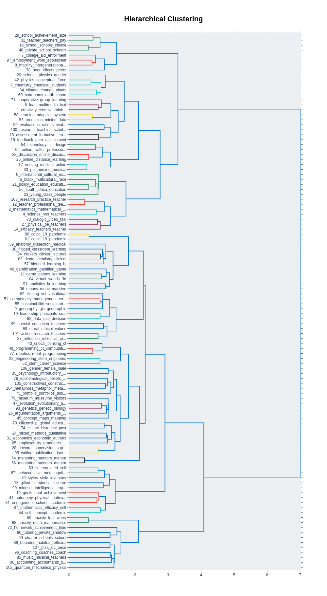
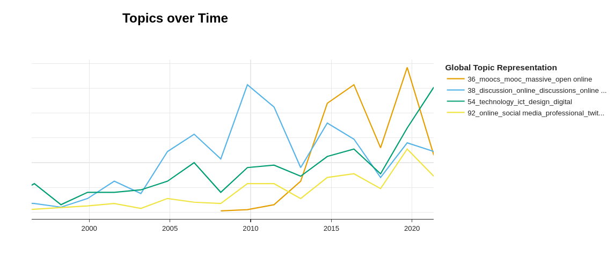

Topic modeling is a great way to discover and characterize the contents of a large text collection. It can help us understand what themes are present in a corpus. They can uncover trends and provide insights where a human, even an expert, would struggle. There are, however, limitations to topic modeling. The main one lies in the interpretation. The results are not always easily understood. Some topics may lack quality. There might be uncategorized documents. Other times the results do not align with a researcher’s expectation or intuition. The most important thing to understand is that topic models alone do not provide all the answers to the contents of a corpus. It is simply a tool to navigate large amounts of texts, and should be used as such.
In this post, we will describe a typical topic modeling use case using the transformer-based BERTopic on scientific abstracts. We will do this with the specific aim of highlighting the problems that might arise during the interpretation of the results. For further interested, an introduction to BERTopic and usage with KBLab’s BERT-models can be found here.
The BERTopic pipeline
The process of topic modeling with BERTopic is roughly as follows: collect the data → transform the data into numerical representations → reduce the dimensionality of these representations → group data points into clusters → describe the content of the clusters.
Here, we’re working with a collection of scientific abstracts from the research field of education. We have downloaded abstracts alongside some metadata (for example: author names, publishing years and author affiliation). The abstracts were scraped from the Science Citation Index Expanded, which is a citation index of over 9000 scientific journals included in the Web of Science (WoS). 144 567 abstracts were collected between the years 1990-2022. Since scientific abstracts are short and distinct (this specific dataset has an average word count of 200), they are an excellent candidate for topic modeling.
The next step of the process is to convert the abstracts into a numerical representation. There are many ways of doing this but the preferred method is by using a pre-trained BERT model to generate embeddings. These are vector representations of the texts that capture the context of words and phrases. Since the data collection was limited to abstracts from papers written in English, we are able to use one of the many pre-trained English language models. In this case, we used DistilBERT, which is a small and fast Transformer model trained by distilling the bloated BERT base. DistilBERT provides a good tradeoff between performance and speed and is a good option, especially if you want to run the model on a laptop. The resulting embeddings are designed to capture complex relationships, making them high in dimension and thus difficult to work with. In order to perform the actual topic modeling, we need to reduce the dimensionality. This is done by using UMAP, which creates a low-dimensional representation of the abstract embeddings.
The goal of topic modeling, simply put, is to group documents into meaningful categories that – hopefully – represent some underlying topics. BERTopic does this by applying a density-based clustering algorithm called HDBSCAN. Very briefly, HDBSCAN groups together dense regions of data points in some feature space using a minimum-spanning tree (a type of graph) in order to connect all vertices of the tree with the minimum total weight.
At this point in the process, we have a set of clusters – groups of documents that are similar in some way. But how do we understand those clusters? What do they actually have in common? The BERTopic pipeline solves this by applying a class-based Term Frequency-Inverse Document Frequency (TF-IDF) matrix. TF-IDF in its original form basically estimates the importance of a word in a document by comparing the frequency of a word in that document to the frequency of the same word in all other documents. The class-based TF-IDF does this on a cluster level by treating all documents in a cluster as one document. This results in a list of the top n most important words in a cluster. We let that list represent a topic.
Et voilà, our topic model is done. Let’s have a look at the results.
The scientific education discourse
The intertopic distance map is an interactive way of exploring the topics. It is quite intuitive – the closer the topics are on the map, the more similar they are in terms of their content. The scientific educational discourse is here represented by 107 topics (as determined automatically by BERTopic as the optimal number of topics), organized into 20 larger clusters. In general, the bigger the cluster (and the topic), the more heterogeneous that cluster or topic will be. Take for example the large cluster in the top-left quadrant of the map. This cluster holds a dozen or so subtopics where some are obviously related: topic 86 and 91, for example, are clearly covid-19 topics. These are closely related to the online learning topic 25 and 38. This is no accident. The online learning topics, however, are at an even greater proximity to topic 0, which is the largest topic in the model. This topic is represented by the words “internal”, “cultural”, “international students”, “higher education” and “expatriates”. The relationship between these topics are less clear, which emphasizes the need of thorough examination of the quality of the topics at hand.
Some patterns in the data are obvious, even to non-experts such as ourselves. As expected, there are several clusters of topics that represent teaching subjects: biology, medicine, accounting, physical education, programming, robotics and many more. There’s also several clusters of topics concerning various facets of being a teacher with topics characterized by words and phrases such as black teachers, teacher identity, mentors, coaching and so on. We can also identify different levels of the educational system, from schools for small children to grad school. There’s several socio-economical clusters that discuss, for example, class, intergenerational mobility, financial aid, segregation and charter schools. These are just some examples but they help give an indication that the topic model is, in fact, relatively sound. There is almost certainly more to this map that an expert could shed some light on. Interested parties are welcome to contribute.
Another way to get an overview of the topics and their internal relationship is by visualizing the potential hierarchical structure of the topic model. The number of topics can be overwhelming, especially since many topics are overlapping. By creating a hierarchical structure, we can easily trace the relationships between topics. As we can see in the graph, some of them are very similar, as demonstrated by for example topics 86 and 61, both concerned with covid. The two topics below, 33 and 17, are connected to medicine and nursing, which is a good fit with the articles about the pandemic. In the same branch we can also identify topics related to online learning and online discussions. Note the close proximity to the covid topics. Looking at the hierarchy can be especially useful if we would like to reduce the number of topics. The hierarchical clustering graph gives us an overview of how similar topics are and therefore can be a good indicator of how many topics could be potentially merged.

Figure 1: Hierarchical topic structure of scientific abstracts in the field of education 1990-2022
We can also explore the topic evolution by providing timestamps for all documents present in the model. In this case, years. The plot represents the frequencies of documents within a topic for a specific year. We can also limit the number of topics we are interested in. Once again, following the steps of the covid topics, we can clearly see the emergence of massive open online courses around 2008. Due to the pandemic, the topic frequency spikes again.

Figure 2: Online learning topics over time.
Taking BERTopic further
Another aspect of topic models to keep in mind as a researcher is that a topic model alone does not constitute research. The topic model provides overview and helps us navigate large quantities of text but it is only of many tools in the quest for new knowledge. It might shine a new light on a dataset but in order to actually produce new knowledge, further analysis is needed. We provide an example of this below by correlating the topics with metadata found in the dataset, namely the nationality of authors. (This variable is not easily available in the dataset but can be extracted through some text wrangling methods that we will not elaborate further upon here.) With information not only about topics but also author affiliation at hand, we can examine what type of research emerges from specific cultural contexts. We do this by performing a correspondence analysis (CA) on our enriched topic model. Correspondence analysis (CA) is a statistical method for analyzing categorical data, conceptually similar to the more well-known principal components analysis (PCA). Using CA, we can visualize associations between topics and affiliations. The analysis is performed using Prince, a Python library for multivariate exploratory data analysis in Python. To reduce the amount of data points, only the 50 most well-represented countries in the dataset are included in the graph. The graph is still very busy, indicating that further reduction of data might be necessary.

Figure 3: Correspondence analysis visualization over topics and author affiliation.
Before looking at the plot, there are some things to take into consideration. Interpreting the results of a CA is not exactly straightforward and a more in-depth guide can be found here, but the most important things to know is that (1) datapoints close to the origin are less distinct than data points further away and (2) a small angle between a topic and affiliation, indicates an association. The interpretation of the actual plotted data should ideally be done by a domain expert to be meaningful. We’ll give it a go nonetheless.
In the left-lower quadrant, we can see that China is closely related to the covid-19 topics, which, to our knowledge, aligns well with the general Chinese discourse. China also appears to have a negative association to the USA, we can be found in the right-lower quadrant. USA stands out as a distinct scientific discourse in the right-lower quadrant, with very subject focused topics such as STEM, psychology and engineering. Other finds, that at least partially, validates our analysis is a cluster of nordic countries in the upper-right quadrant. This indicates a shared scientific educational discourse. Some topics that are distinct to the nordic countries are PISA, reflective practices and ethical values.
Conclusions
In this post, we have revisited BERTopic and provided some useful tools to mitigate the limitations of the method. Demonstrated here is a non-exhaustive list of ways to validate your topic model, as well as examples on how to perform further explorative data analysis using BERTopic as a base.